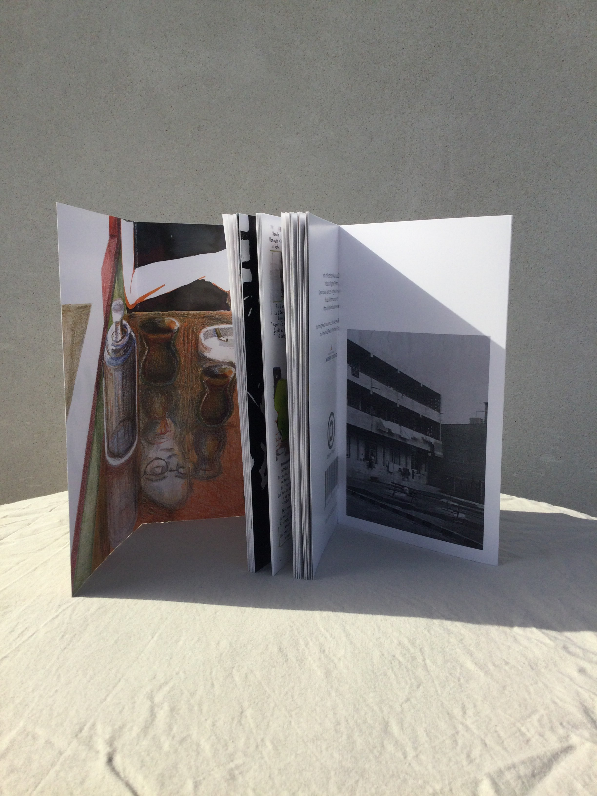
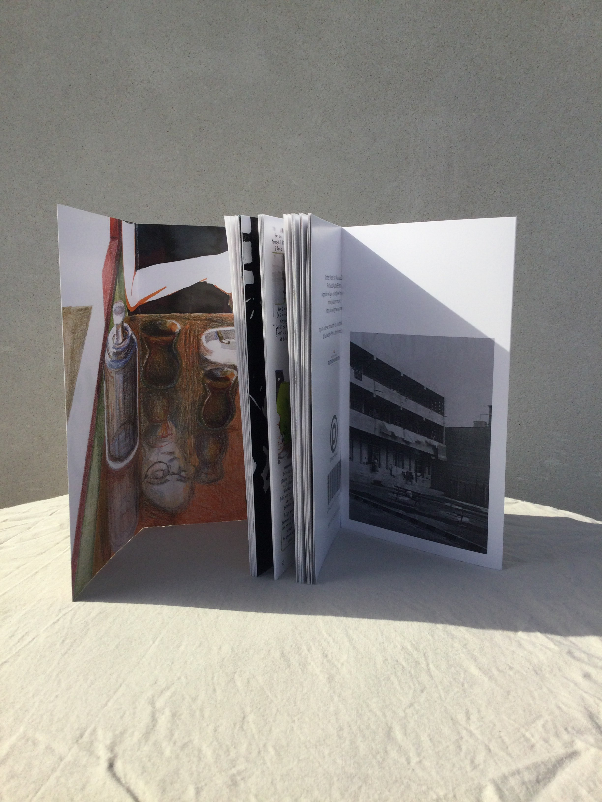

Bonjour, pouvez-vous vous présenter pour nos lecteurs et lectrices ?
Bonjour, je suis une jeune auteure de BD et illustratrice, française, qui travaille actuellement sous le nom de Mamoste Dîn [« Mamoste Dîn » signifie « professeure folle » en kurde]. Ce nom me fut donné par des personnes du camp de Lavrio à qui je faisais faire de la gravure et des impressions.
Comment avez-vous fait la connaissance du mouvement kurde?
Historiquement. Autrement dit, de la même manière que je me suis documentée sur la guerre d’Espagne en 1936, l’IRA, les zapatistes, les situationnistes, les guérillas et les divers mouvements révolutionnaires historiques. Il me semble impossible de ne pas avoir ces repères si l’on veut être pertinent politiquement. Il faut, pour avoir une compréhension juste de notre société et une perspective stratégique, connaître les différents mouvements de protestation anticapitalistes, antifascistes et révolutionnaires.
Comment avez vous été emmenée à vous rendre aux camps de réfugiés kurdes de Lavrio et d’où est partie l’idée de faire une bande dessinée sur le sujet ?
J’ai pu connaître le camp de Lavrio grâce à une amie de longue date et camarade géographe (étudiante) qui avait fait son mémoire de master sur le camp. Elle connaissait mon travail, mes dessins et aussi mes considérations politiques et elle m’a proposé de venir avec elle, pour dessiner les lieux et travailler sur l’endroit.
Y a t’il des anecdotes qui vous ont marquée particulièrement au camp que vous voudriez bien partager avec nous ?
Pour ce qui est des anecdotes, cela dépend si je peux parler de ce qui est dans la Bande dessinée ou s’il vaut mieux d’autres choses afin de laisser un peu de découverte.
– Les premiers mots qu’on m’a appris à dire en kurde, par exemple, et ce grâce à un responsable du camp, étaient : Tu es fou/folle ! Où est le docteur ?
Après avoir bien répété ces phrases dans ma tête, et bien sûr, très fière de moi, je me suis précipitée vers la première personne que j’ai croisé pour appliquer mes nouvelles connaissances. Et à partir de ce moment, c’est moi que tout le monde a appelé « la professeure folle ». Professeure parce que je faisais l’atelier de gravure. Et folle parce que c’était mes premiers mots !
C’est d’ailleurs assez compliqué de répondre, car en fait il y tant d’anecdotes, et je ne sais lesquelles sont les plus intéressantes à raconter…
Il y avait toujours ces heures pendant lesquelles, deux par deux, côte à côte, et parfois sans se parler, juste en fumant, des gens du camp faisaient des tours dans la cour, toujours de manière régulière. Les différents duos ne se parlaient pas entre eux. C’était une habitude de prison dont ils n’avaient pas pu se défaire.
A Lavrio tout le monde fumait des cigarettes et buvait du thé en permanence. Et le premier qui commençait à fumer proposait toujours à tous ses camarades de tablée ou de balade une cigarette. Il en allait de même pour le thé, si bien que tout le monde finissait par sentir cette odeur de plante, de sucre et de fumée.
Quel effet vous a laissé le camp, quelles traces gardez-vous de cette expérience ?
Beaucoup de choses, en premier lieu des amis. Enfin après c’est peut-être abstrait de parler d’amitié, quand les liens ne se font plus que par mails plus ou moins réguliers, mais je suis toujours contente quand les gens me demandent de dessiner des portraits de leurs familles, de leurs amours et même parfois des souvenirs. C’est agréable d’avoir des nouvelles et de ne pas se perdre de vue.
Ensuite, je ne pense pas que les références politiques et les idées révolutionnaires soient exactement les mêmes en France et au Kurdistan.
Il y a pas mal de différences, qu’elles soient liées à l’histoire du PKK ou non. Par exemple le confédéralisme démocratique, qui naturellement n’est pas une théorie importante en France dans les groupes radicaux. Ou encore le rapport au culte de la personnalité, et toute l’imagerie communiste présente dans le camp qui en découle, qui en France est source de méfiance : les portraits énormes, sur fond rouge, qu’ils soient de Staline, de Marx ou encore d’Ocalan ne portent pas la même histoire.
Toutefois il est indéniable que la vie politique, l’organisation du camp à laquelle prennent part les gens, le système d’assemblées, le pouvoir concret des habitants sur leur vie, sont des choses qui doivent être l’objectif à atteindre en France pour les groupes radicaux sérieux, des choses qu’ont d’ailleurs essayé de mettre en place les gilets jaunes, à des échelles locales.
Après, on ne peut pas encore parler en France d’une organisation stratégique révolutionnaire, les gilets jaunes, et les gauchistes radicaux plus ou moins cohérents ne sont ni armés ni organisés actuellement pour agir de manière aussi conséquente et radicale que le PKK.
Dans la bande dessinée il y a un parallèle créé entre la lutte des kurdes et le mouvement des Gilets Jaunes, pourriez-vous développer cela ?
J’ai participé pendant toute l’année 2019 à la plupart des actes des gilets jaunes, j’ai commencé à l’acte 2, et ce fut une année extrêmement plaisante et intéressante. Je ne savais par contre pas avec quelle ampleur les gilets jaunes s’étaient exportés à travers le monde ! Si bien que, lors de mon arrivée au camp, quand certains ont appris mes déboires en garde à vue, ou au tribunal, ils ont tenu à me montrer leurs gilets jaunes customisés avec des drapeaux et des figures kurdes. C’était quelque chose pour moi d’incroyable, que des gens qui se sont enfuis de leurs pays, qui ont été torturés, emprisonnés, condamnés pendant des années, qui ont perdu des proches et qui ont combattu Daech se revendiquent gilets jaunes avec fierté. J’avais l’impression d’être loin derrière avec nos quelques émeutes en France.
Mais au fond, il est évident que ces luttes se rejoignent dans leurs revendications, et dans la criminalisation créée en réaction par nos état capitalistes (néanmoins bien moins violente en France). Et c’est pour une raison très simple, c’est parce que tous ces pays sont capitalistes et libéraux. Tous ces pays plus ou moins violents avec leur population, plus ou moins racistes, homophobes, patriarcaux, sont des pays qui fonctionnent sur les mêmes bases économiques et politiques. La France comme la Turquie exploite sa population, l’aliène, dépossède les individus de leur liberté et de tout pouvoir sur l’organisation de leur vie.
Avez-vous pu échanger avec les femmes kurdes de Lavrio ? Si oui, qu’est-ce que vous pouvez dire au sujet de ces femmes qui portent à la fois le difficile fardeau de réfugié et de femme ?
Oui, j’ai échangé avec des femmes kurdes. Il est indéniable qu’être une femme complique énormément les choses surtout dans une situation d’illégalité. Quand je suis allée dans le camp, la majorité des femmes présentes étaient arrivées avec leur famille. Dans ces conditions matérielles difficiles, il est compliqué de participer à la vie du camp, politiquement je l’entends. Et bien que l’assemblée des femmes ait un droit de véto sur toutes les décisions prises dans le camp, cela a moins de valeur si ces mêmes femmes n’ont pas autant de temps pour réfléchir à l’organisation politique. Même si les enfants sont pris en charge par tout le monde et que les parents n’ont pas à douter de l’entraide qu’ils vont recevoir dans le camp, ces enfants restent une charge supplémentaire, et beaucoup travaillent à l’extérieur du camp. Aucune femme n’a donc eu le temps de participer à l’atelier de gravure par exemple. Et je ne parle même pas d’être une femme enceinte. Le temps de notre visite, nous partagions une chambre avec une femme dans cette situation qui avait été dublinée en Allemagne alors que son mari, lui, avait pu rester. Elle était seule et réfugiée. Heureusement que là encore tout le monde fait preuve de solidarité, grâce à cela les femmes de la chambre d’à côté lui préparaient toujours à manger et l’aidaient.
Mais le camp de Lavrio, parmi tous les camps de réfugiés que j’ai vu, ou les lieux illégaux mixtes d’occupation, est exemplaire, c’est peut-être même le seul où être une femme n’y présente aucun danger.
Le rapport de la rue, de la police et de la justice aux femmes est toujours violent et sexiste. Dans la bande dessinée, tout un chapitre qui s’appelle « Les femmes » est d’ailleurs dédié à un procès populaire féminin qui a eu lieu dans un autre camp suite à des attouchements. Il se conclut comme ceci : « Les femmes savent que porter plainte est inutile, qu’elles ne seront jamais entendues par la justice, d’autant plus dans cette situation. Et quand bien même elles le seraient, il est évident qu’aller demander à la justice, à la police et aux magistrats de régler le problème serait dangereux pour tout le monde. Les juges envoient des gens en prison, les juges qui au fond n’ont aucune connaissance concrète de ce qu’est une prison, de ce qu’est la misère, de ce qu’est l’illégalité. »
Outre un témoignage à travers votre art, quel message espérez-vous que cette oeuvre apporte aux lecteurs ?
J’aimerais idéalement créer une conscience politique et une volonté d’action chez les lecteurs. Une conscience que tout le monde est concerné par le combat révolutionnaire, et surtout que ce combat est nécessaire en France aussi. L’exploitation, l’aliénation, ces farces que sont la justice et la politique actuellement, ne concernent pas que la Turquie ou des pays lointains mais bien tout le monde.
Auriez-vous quelque chose à ajouter pour nos lecteurs et lectrices ?

 
